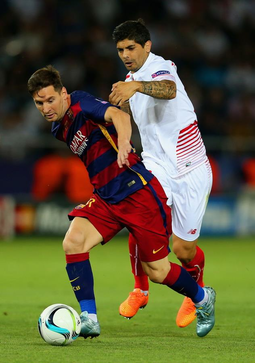

.png)
.png)
.png)

2015–16: Domestic success

Messi opened the 2015–16 season by scoring twice from free kicks in Barcelona's 5–4 victory (after extra time) over Sevilla in the UEFA Super Cup.[192] On 16 September, he became the youngest player to make 100 appearances in the UEFA Champions League in a 1–1 away draw to Roma.[193] After a knee injury, he returned to the pitch on 21 November, making a substitute appearance in Barcelona's 4–0 away win over rivals Real Madrid in El Clásico.[194] Messi capped off the year by winning the 2015 FIFA Club World Cup final on 20 December, collecting his fifth club trophy of 2015 as Barcelona defeated River Plate 3–0 in Yokohama.[195] On 30 December, Messi scored on his 500th appearance for Barcelona, in a 4–0 home win over Real Betis.[196]
On 11 January 2016, Messi won the FIFA Ballon d'Or for a record fifth time in his career.[197] On 3 February, he scored a hat-trick in Barcelona's 7–0 win against Valencia in the first leg of the Copa del Rey semi-final at the Camp Nou.[198] In a 6–1 home win against Celta Vigo in the league, Messi assisted Suárez from a penalty kick. Some saw it as "a touch of genius", while others criticised it as being disrespectful to the opponent. The Celta players never complained and their coach defended the penalty, stating, "Barca's forwards are very respectful." The penalty routine has been compared to that of Barça icon Johan Cruyff in 1982, who was battling lung cancer, leading many fans to indicate that the penalty was a tribute to him. Cruyff himself was "very happy" with the play, insisting "it was legal and entertaining".[199][200]
On 17 February, Messi reached his 300th league goal in a 3–1 away win against Sporting de Gijón.[201] A few days later, he scored both goals in Barcelona's 2–0 win against Arsenal at the Emirates Stadium, in the first leg of the 2015–16 UEFA Champions League round of 16, with the second goal being Barcelona's 10,000th in official competitions.[202] On 17 April, Messi ended a five-match scoring drought with his 500th senior career goal for club and country in Barcelona's 2–1 home loss to Valencia.[203] Messi finished the 2015–16 season by setting up both goals in Barcelona's 2–0 extra time win over Sevilla in the 2016 Copa del Rey final, at the Vicente Calderón Stadium, on 22 May 2016, as the club celebrated winning the domestic double for the second consecutive season.[204] In total, Messi scored 41 goals as Barcelona's attacking trio managed a Spanish record of 131 goals throughout the season, breaking the record they had set the previous season.[205]